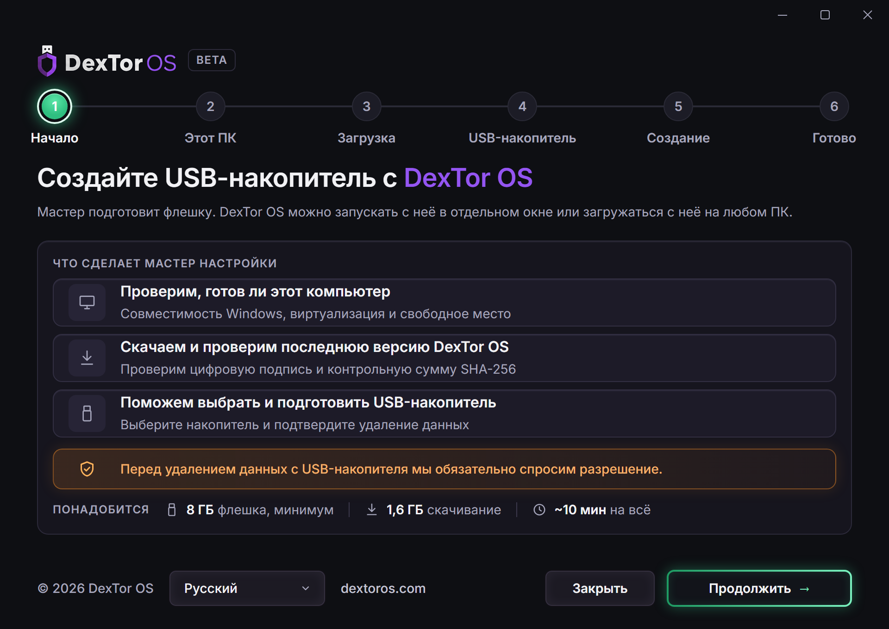
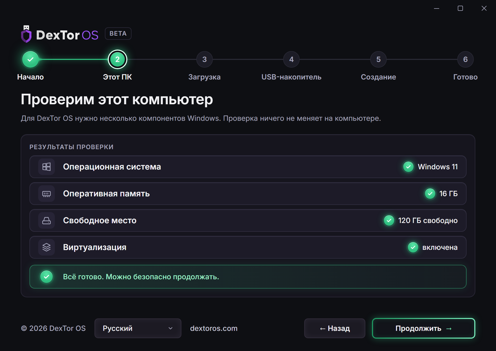
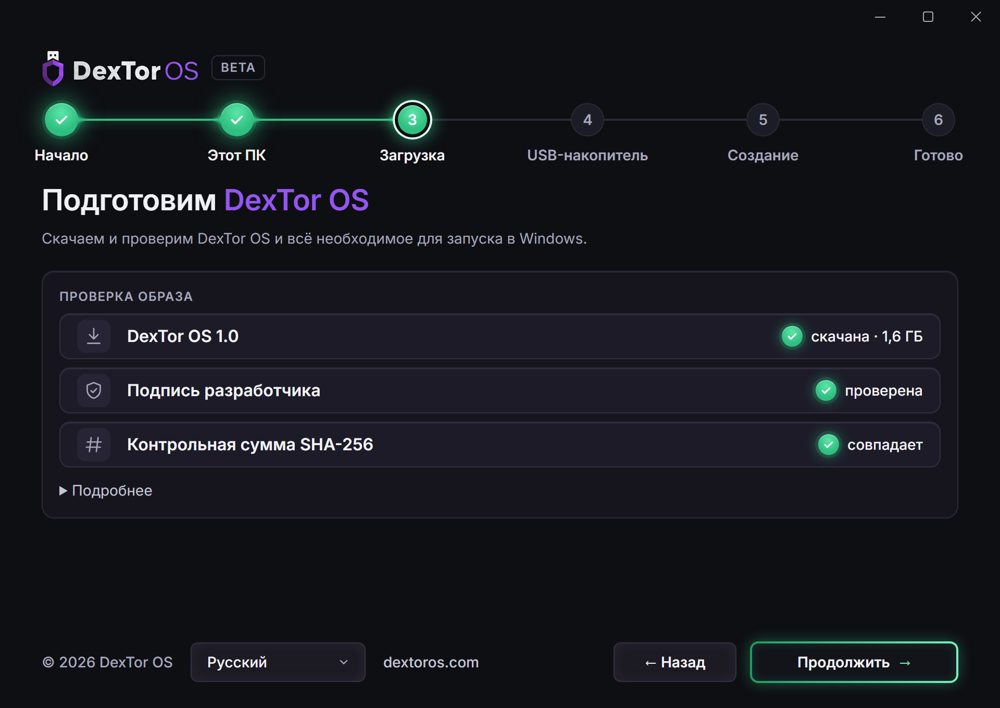
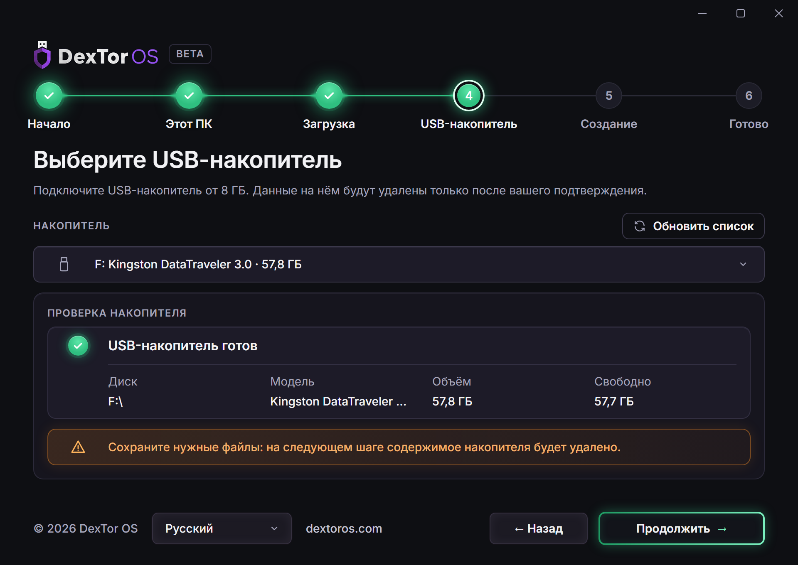
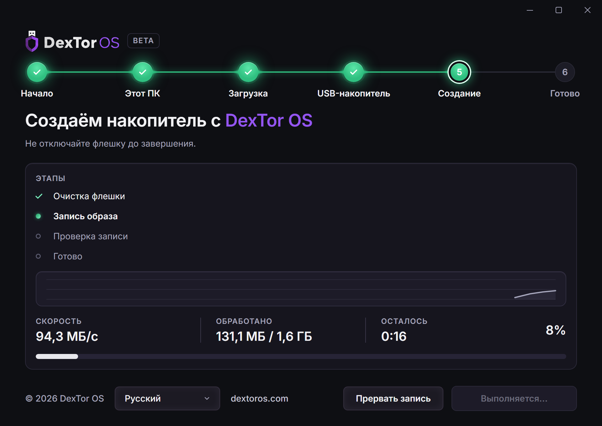
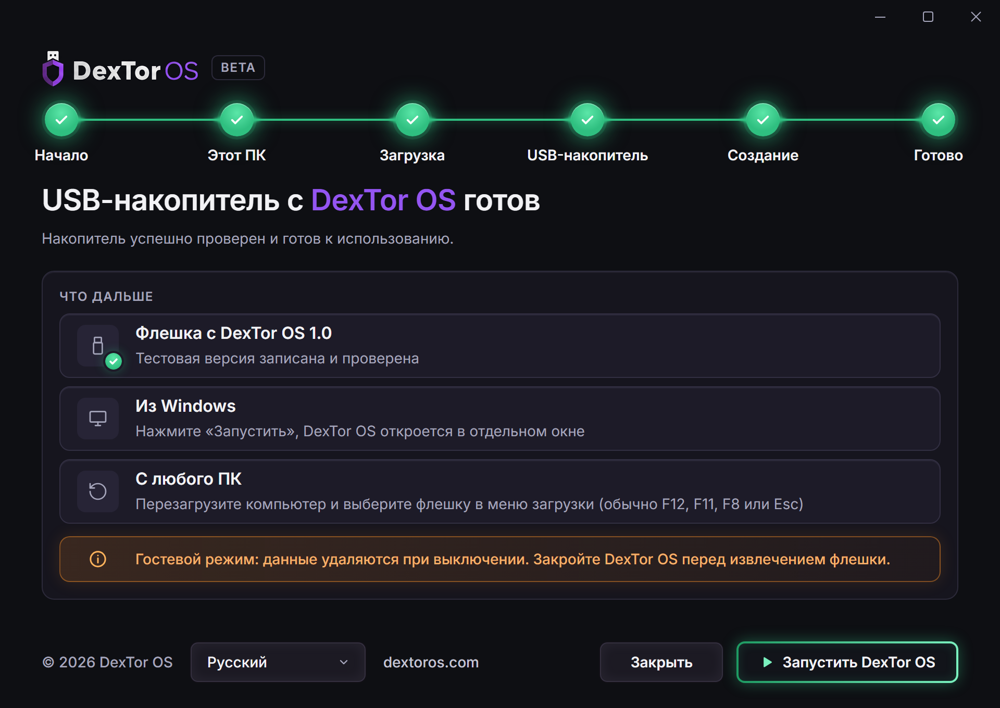

DexTor Wallet
Multi-signature wallet combined with cold storage, providing secure access to messenger, marketplace and DeFi tools.
A portable, Linux-based OS for secure crypto access. It runs from USB on any computer and is fully encrypted — with wallet, DEX and messenger built in.

Built on proven open technologies
Wallet, exchange, staking and messenger work inside one protected environment. No need to piece together a dozen apps and trust each one.
Multi-signature wallet combined with cold storage, providing secure access to messenger, marketplace and DeFi tools.
No installation required. Launch DexTor OS from a USB drive on any device — in a separate window or at boot — leaving no digital trace.
Trade and earn without intermediaries. Your assets stay under your control, with DeFi fully integrated.
Layered defense with Tor, VPN, sandboxing and quantum-resistant encryption working together.
A real-time AI scanner blocks phishing links and malicious smart contracts before they can reach you.
Messenger, staking, trading, wallet and dApps — everything you need, in one portable OS.
The Windows setup wizard guides you through everything: it checks your computer, downloads and verifies the image, and prepares the USB drive.





The entire drive is encrypted with LUKS. Without the password, the data on the USB can’t be read.
Traffic goes through Tor by default, with VPN as an extra layer. Apps are isolated in a sandbox.
An emergency password instantly and permanently wipes all data from the USB — in case of physical threat.
Session runs from USB only
DexTor OS runs entirely from USB and writes nothing to the computer’s disk. Digital trace elimination guarantee — 99.9%.
Get started in 10 minutesDidn’t find an answer? Write to us — the DexTor OS team replies in Telegram and Discord.
Contact usDownload the setup wizard for Windows — it checks your computer, downloads the image and prepares the USB drive.